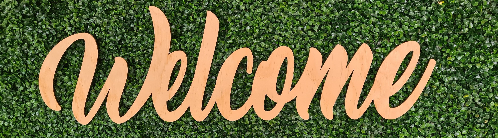

Welkom op mijn portfolio, mijn naam is Yannick van Eck en ik studeer Graduaat Programmeren (2 jarige opleiding) aan de Thomas More Geel
Op deze website zal ik al mijn prestaties plaatsen rond webdesign, zowel statisch als interactief
Ook zal ik verdere informatie geven over mezelf en kunt u ook mijn CV downloaden
